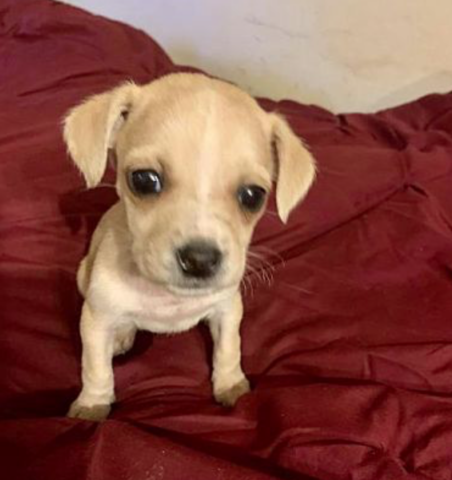
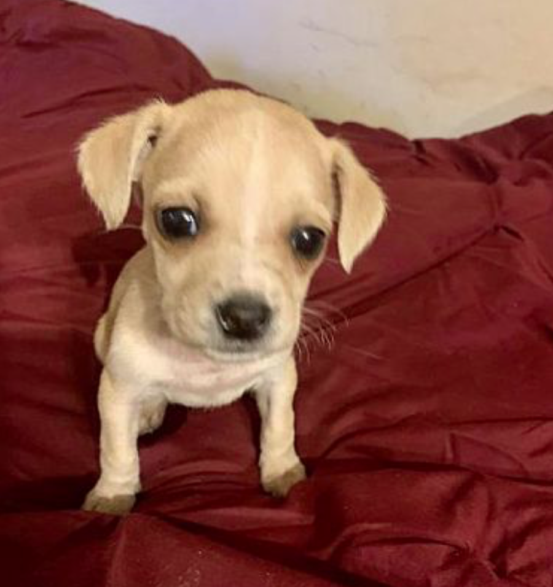

My Info
- Breed: Hound (unknown type) mix
- Color: white- with tan, yellow, or fawn
- Age: Puppy
- Size: (when grown) Medium 26-60 lbs
- Sex: female
- Pet ID: 15335232
Facts About Me!
- Shots are up to date
- Good With Dogs
- Good with kids
My Story...
Looking Glass Animal Rescue is a 501c3 virtual rescue, using a network of dedicated fosters throughout the Northeast to care for our animals until adoption. You may be required to travel if approved for adoption.
Mardi Gras is one of 11 puppies born to a Hound mother in a Louisiana shelter. She's the runt of the litter and such a little sweetie. We think she will be a large breed dog (we cannot know for sure), but she's a pure delight. Mardi Gras is heading up North soon and will be looking for her forever family.
Mardi Gras is available for adoption through Looking Glass Animal Rescue, a 501c3 non-profit animal welfare organization. All adoptions are subject to review and approval. Please complete an application at https://lgarinc.org/adoption-application/ .
Please note that you must be 25 years of age to adopt and we reserve the right to refuse adoption to anyone. Please be advised that we will not approve adoptions to persons who mislead or fail to provide accurate information on this application. Incomplete applications will not be processed.
Contact Info
- Rescue: Looking Glass Animal Rescue
- email: adopt@lgarinc.org
- Address: PO Box 1175, Ridgefield, CT 06877
- Pet ID: 15335232
- Website: https://www.pupstarzrescue.org
- Donate to this rescue on their website
Their Adoption Process
- submit application
- interview
- home check
- approve application
- sign adoption contract
- pay fee
- take the pet home
Additonal Adoption Info
Looking Glass Animal Rescue’s goal is to place homeless dogs and cats into forever homes with loving families. We take special care to match the right home with the right animal, ensuring a lifetime of love for both the pet and the adopter. To ensure the best matches are made, we have a process that has been proven effective in determining the best homes for our animals.
- Step 1 – Fill out an Adoption Application
This application will tell us about you and your lifestyle, training beliefs and background with animals.
- Step 2 – Application Preliminary Review
Our placement team will initially screen your application to determine if all necessary information was provided. If not, you will be contacted to either fill out another application or provide additional information.
- Step 3 – Landlord Approval Verified
If it is determined that you rent your home, your landlord will be contacted to make sure you have approval to have a pet in your home. We will also ask about any breed or size limitations. If your landlord does not allow for a dog or cat in your home, your application will be denied at this point in the process.
- Step 4 – Veterinary References Contacted
An adoption coordinator will contact the veterinary reference(s) you provided to determine if all your current pets are spayed/neutered and up to date on vaccinations. If you don’t have any current pets, we will ask about the veterinary care that your previous pets received. If you have never owned a pet, this step is skipped.
If your veterinary reference(s) cannot verify the spay/neuter and vaccination status of current or previous pets, processing of your application will be stopped until you can provide this information.
- Step 5 – Personal References Contacted
An adoption coordinator will contact your three personal references (only one of whom may be family) and ask them questions in regards to whether they consider you to be a responsible pet owner.
This is the portion of the process that can take the most amount of time. It is helpful if you contact your references and ask them to return our calls in a timely manner. If our reference checking volunteers have any major concerns about adopting a dog or cat to you, based on communication with your references, your application may be denied at this point in the process.
-
Step 6 – Home Visit and Applicant Interview
Our organization requires home visits to determine that the pet will be living in a safe environment. This is an informal chance for us to get to know you, your lifestyle, home environment and determine which dog(s) or cat(s) in our program might be the best fit. The home visit volunteer will do a short walk-through of your home and yard to ensure its safety and to advise on any areas of concern. All household members must be present for the home visit. We will also ask for proof of ownership (if you own your home), and will ask for or take pictures of both the interior and exterior of your home. If our home visit volunteers have any major concerns about your home environment, or if you refuse a home visit, your application will be denied at this point in the process.
-
Step 7 – Meeting between Approved Applicant & Requested or Available Animal
Our organization does not have a shelter where the dogs and cats can be visited. Our animals are in foster homes. We do NOT arrange meetings between interested individuals and our Fosters until an applicant has been approved via this adoption process.
Once you have been approved, the adoption coordinator will contact you about scheduling a time for you to meet the dog(s)/cat(s) you are interested in.
Just because you are determined to be an approved adopter, you are NOT guaranteed a particular dog or cat. For some animals we receive many applications so we may allow multiple applicants to have a meeting with the dog or cat before we choose the home that we feel will be the best fit for all. Also, if the volunteer involved in the meeting with you and the animal, does not feel you are a good fit for specific reasons, you may be denied adoption of that particular dog or cat but you may be allowed to adopt another animal deemed more appropriate.
-
Step 8 – Adoption
If you are approved to adopt you are required to provide payment of the adoption donation fee (and spay/neuter deposit if necessary). Once received, you become the owner of the dog or cat. If at any time you are having issues with or have questions about your new pet, please call or email your contact person and inform us. A volunteer will be in touch with you ASAP.
-
Step 9 – Notification of Spay/Neuter & Return of Deposit
If, at the time of adoption, your dog or cat was not already spayed/neutered (typically due to being underage or for medical reasons), you would have been required to agree to spay/neuter your dog or cat, via a spay/neuter contract, and provide us a deposit fee. Our adoption contract requires all dogs to be spayed/neutered within 1 month of adoption or when age/medically appropriate. You are asked to notify us when you have scheduled this surgery and at what vet clinic it is being done. Our volunteers will verify that the dog or cat has been spayed/neutered. Once this has been verified, your deposit check will be returned to you. If you fail to spay/neuter, as outlined in the adoption contract you signed, our organization will take appropriate measures to take back the animal.
-
Step 10 – Optional Post Adoption Follow-up Visit
Our adoption contract contains a clause that allows one of our volunteers or a representative the ability to perform a follow-up visit. We may require such a visit if we feel that the terms of the adoption contract are not being met. Looking Glass Animal Rescue is committed to the life, health and well-being of every dog and cat we place for the remainder of that their life. Should the adoption not work out or you need to rehome your new pet, we require by contract that the animal be returned to us. Please notify us ASAP by emailing adopt@LGARinc.org.
Go Meet their Pets!
Our organization does not have a shelter where the dogs can be visited. Our dogs are in foster homes throughout the Northeast. We do NOT arrange meetings between interested individuals and our Fosters until an applicant has been approved via this adoption process. You may need to drive to meet your new pet for both meet and greets and final adoption transfer.
Once you have been approved, adoption coordinator will contact you about scheduling a time for you to meet the dog(s) you are interested in. This meeting may occur at the foster’s residence or your home. Please plan to travel at least part of the way, if needed.
More About This Rescue
Looking Glass Animal Rescue (“LGAR”) is a nonprofit volunteer-based animal welfare organization dedicated to rescuing dogs from high-kill shelters, hoarding situations, puppy mills, animal fighting rings and more. While we welcome all animals in need, we specifically focus on animals that are often overlooked due to age, breed, special need or an illness or injury requiring immediate, often costly medical attention that shelters are unable to provide. Without a rescue outlet, these animals would otherwise be euthanized due to their issues.
Lastly, for each animal that we place, we provide extensive education on how to transition the animal into their new life. Basics like crate training, house training, obedience training, and the best ways to introduce resident pets are integral for the success of the relationship. When necessary we will also engage professional trainers for those animals that need specific behavior modification in an effort to help our animals and their new family position themselves for success. Mental health is as important as physical health and we believe that every animal should be given the chance to lead a life free of fear and anxiety. Like psychologists, professional trainers are often the only ones equipped to transition an abused animal from the life that once "was" to the life that "could be". Our goal is to ensure that all of our animals become a cherished and welcomed member of their new family for the remainder of their lives.
Without you, we don't exist! Here are three ways to help right now:
•Give: Your gift of any size can give an animal a second chance and even save a life. Your monthly gift can help us budget and plan more effectively allowing us to potentially save more lives.
•Share: Help spread the word on Facebook, Instagram and Twitter by sharing the news of our launch with all your contacts – don’t forget to “Like” our page and sign up for our e-newsletter!
•Act: Make a face-to-face impact by becoming a Foster Caregiver. When you volunteer as a foster caregiver, you’ll help change lives…including yours!

 
